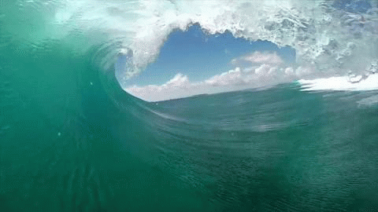
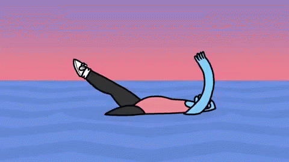
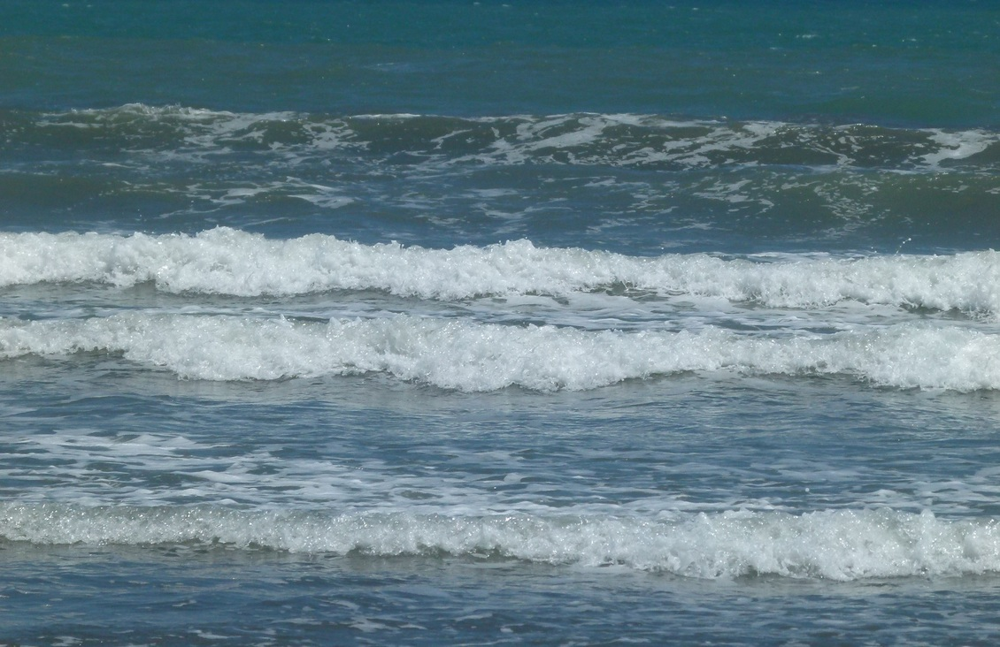
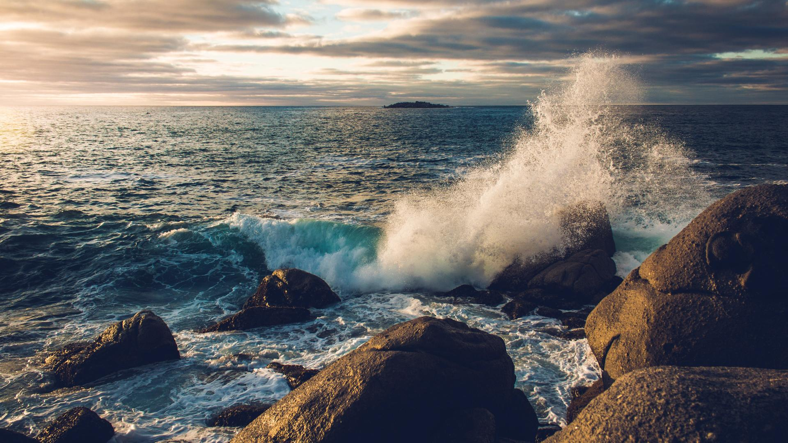
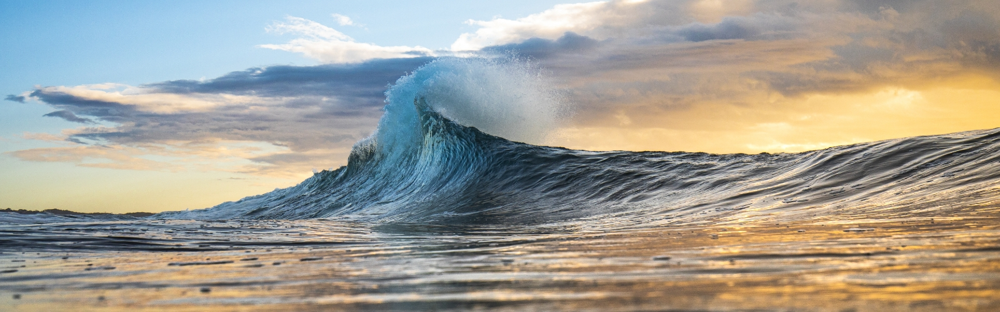
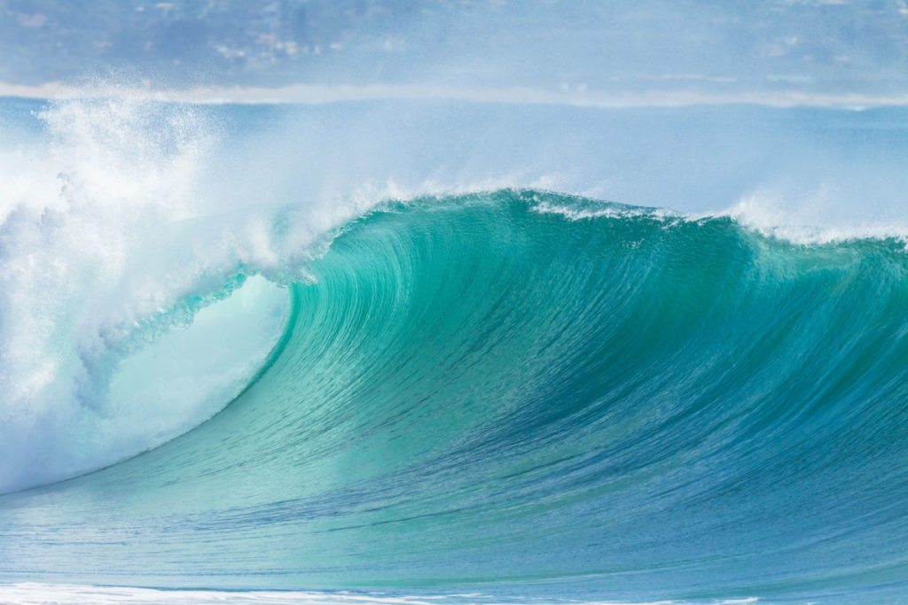

Weather we like to swim, surf, doggie-paddle, body-surf, or maybe we only know how to float! Many of us like to go to the beach and most beaches we go to are on the shore of an ocean. We frolic in the waves. Here I will give you a tiny bit of information about those waves.
Definition: a wave is a repeating pattern of motion that transfers energy from place to place without entirely displacing matter. Disturbances and vibrations cause waves in water at the surface of the water body.
Ocean waves are commonly caused by wind. When the waves move across a deep water surface, the water goes up and down.
*Always take swimming lessons before going into a large body of open water!
MENU



ALWAYS TAKE SWIMMING LESSONS BEFORE GOING INTO OPEN WATER

© Kane McIntyre 2023
6 Common Waves
#1 Beach Break
This particular wave breaks over a sandy bottom and the shape of the wave changes according to the shifts in the seabed. It can flow differently, become lower or higher, etc. according to sandbars appearing or disappearing.

#2 Crumbly Waves
Sometimes called Choppy Waves: are smaller waves and are not strong or powerful. They’re not too steep, fast, or hollow and break gently.

#3 Point Breaks
Like the name says, this wave usually breaks where land is jutting out into the sea, or on a point of land. It usually breaks over rock or sand they peel for much longer than beach or reef breaks.

#4 Reef Breaks
These are spots where waves break over a rocky bottom or coral. The line-up changes depending on the size and direction of the waves, but the seabed remains constant. This is considered the most challenging wave because they tend to be fast, powerful, and have extremely shallow wipeouts.

#5 Reform Waves
These are waves that form when water dies down after hitting deep water and then reform again due to reaching shallower waters. These are best to ride if you are new to surfing.

#6 Double-Up Waves
This is the result of two waves meeting up and coming together and results in a very powerful wave. It is a very hollow wave more dangerous than a regular wave and mostly unrideable. However, under the RIGHT circumstances, it may also provide the biggest, most excellent ride of a surfer’s life.
